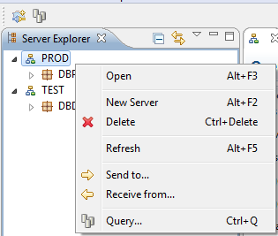

The Server Explorer is a panel to manage the servers, schemas and tables.

Right click the panel to open, create, or delete an item. The data migrations and batch queries can also be started from the Server Explorer by using the right-click menu.